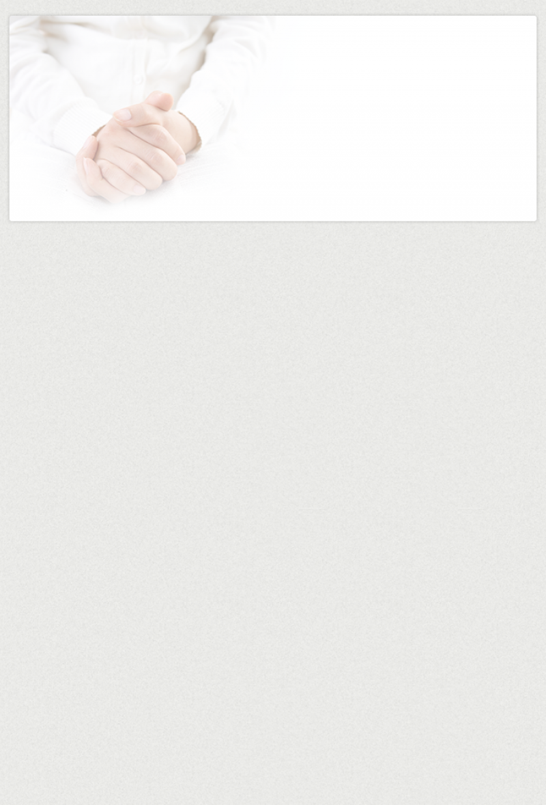

경조

본 교회에서 거행하는 결혼 예식은 다음과 같은 규정대로 한다.
• 신랑 신부 중 한쪽은 본 교회 세례교인 이어야한다 세례교인이 아닌 경우에는 다음 기회에 세례 받을 것을 조건으로 허락할 수 있다.
• 신랑 신부 중 한쪽만 본 교회 세례교인이고, 한쪽은 타 교회 세례교인인 경우에는 세례교인 증명서를 첨부해야한다.
• 본 교회 교인이라도 원칙적으로 쌍방이 등록한지 1년이 경과한 자라야한다.
• 결혼은 모두 초혼이어야 하며 배우자와 사별한 경우에만 결혼을 허락한다. 이를 위해 신랑 신부는 혼인관계 증명서를 첨부해야 한다. 이혼은 불가.
• 토요일에는 주일예배 준비를 위해 결혼식을 오후 3시 30분까지로 제한한다.
• 양가는 검소한 결혼식이 되도록 최대한의 노력을 해주셔야 합니다 따라서 당일 결혼예식 중에는 예배외의 소란스러운 축하나 장치를 금합니다(예:꽃가루뿌리기.폭죽. 테이프던지기.조명장치등) 또한 화환도 일절 사절하며 강단이나 중앙통로에 최대한 검소하게 꽃꽂이 장식을 해주실것을 부탁드립니다.
• 결혼식을 본 교회당에서 할 경우 주례자는 본 교회 목사라야 하며 최소한 결혼2~3개월 전에 교회와 이를 상의하셔야 합니다.
• 주보광고를 위하여 교회사무실로 결혼2주전까지 청첩장이나 인적사항을 알려주시기 바랍니다.
• 주 야간 연락처: 교역자
본 교회 교인이 임종직전 상태에 빠지면 가족들은 침착한 태도로 다음과 같이하여야한다.
• 임종직전에 가족들은 찬송과 성경말씀을 들려준다.
• 임종을 맞는 성도에게 꼭 물어둘 말이 있으면 그 내용을 간추려 묻고 대답을 기록한다.
(녹음기가 있으면 마지막 육성을 녹음하여 보존하는 것도 좋다)
임종준비
환자가 운명하면 먼저 장례를 어디에서 진행할 것인가를 유족들과 결정한 후에 소속 목장리더에게 연락하고 목장리더는 교구목사나 경조담당 교역자 또는 경조팀장에게 연락한다.
• 상가 소식을 접하는 대로 교구목사나 전도사, 경조팀은 상가에 가서 임종예배를 드리고 장례 절차를 의논한다.
• 상가에서는 경조팀의 안내를 받아 모든 절차를 교회 예식대로 따라야 하며 예식 중에는 주류나 담배 사용을 금한다.
• 영구 앞에 고인의 사진을 세우는 것 외에 분향이나 촛대를 세우지 않도록 하고 상주에게 인사는 하지만 고인의 사진앞에 배례는 하지 않는다
임종
• 교회가 정한 시간에 입관예배를 드리며 상주와 부인들은 입관이 끝난 다음에 상복과 상표를 부착한다
• 상주는 문상객을 정한 자리에서 정중하게 맞이한다.
입관
• 교회와 유족이 정한 일시에 장례를 거행하게 되는데 유가족들은 장지에서 필요한 모든 물건들을 미리 준비하였다가 발인예배가 끝나면 곧 출발할 수 있도록 한다.
• 발인예배가 끝나고 유해를 영구차에 운구한 후에 장지까지 갈 분은 차에 승차하고 못 갈 분들은 유족들과 인사를 나누고 귀가 한다
• 교회내에서 장례예배를 드릴때는 원칙적으로 고인이 항존직분에 한 한다.
발인
• 화장시에 영구차가 화장장에 도착후에 배정시간이 되어 화구에 들어가면 화장예배를 드리고 조객들은 귀가한다. (단 향존직에 한해서는 납골당까지 가서 안치한 후에 조객들은 귀가한다)
• 하관시에 영구차가 장지에 도착하면 곧 하관을 하고 하관예배가 끝나면 유족과 조객들은 찬송과 동시에 헌화와 취토로 매장하고 귀가한다.
화장 및 하관
• 장례예배의 순서를 맡아 예배를 돕는다
소망조가대

기독교식 장례
담당 교구 목사 및 경조팀 사역자에게 알림
본교회
주관 장례
교회 의뢰
(담당 교구목사/
경조팀 사역자)
장례식장 결정
1)조기
2)조의금 전달
3)예배 -임종, 위로, 입관, 발인, 화장(하관)
4)조가대 및 운구지원
5)고인 및 유가족 소속 목장 및 교역자, 경조팀 조문
타교회 주관 장례
1)조의금 전달
2)고인이나 유가족 소속 목장 및 교역자, 경조팀 조문
비기독교식
장례
1)조의금 전달
2)고인이나 유가족 소속 목장 및 교역자, 경조팀 조문
장
례
발
생


경조(결혼, 장례)사역팀
결혼주례 신청절차
• 담임목사님 주례 경우
교역자 사무실에 주례신청을 하시고 교구담당 교역자나 경조담당 교역자와 최소 한달전에 상담하고 결혼식 준비와 예식진행에 관한 사항을 숙지해야 합니다